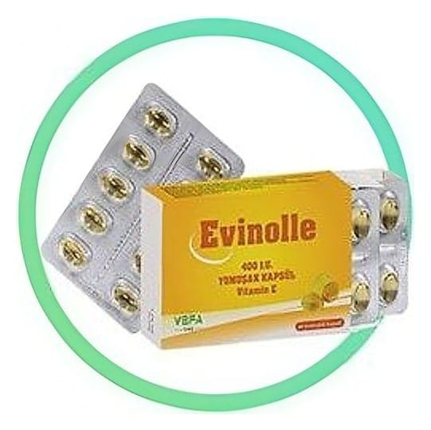

Evinolle 400 I.U. Yumuşak Kapsül, 30 Adet

Ne için kullanılır
KT · Bölüm 1EVİNOLLE, her bir yumuşak kapsülde 400 I.U. naturel vitamin E (d-alfa tokoferil asetat) içeren bir vitamin ilacıdır. 30 ve 60 yumuşak kapsül içeren ambalajlarda piyasaya sunulmuştur. EVİNOLLE, vitamin E eksikliğinin tedavisinde ve önlenmesinde antioksidan etkiden dolayı genel sağlığın korunmasında kullanılır.